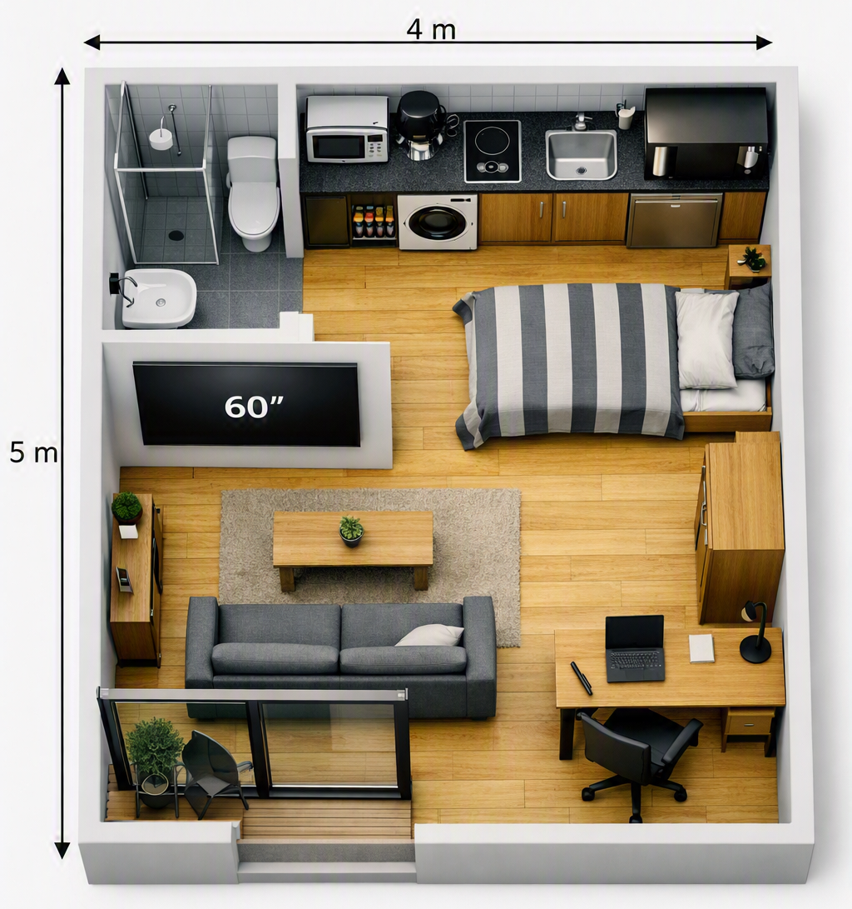
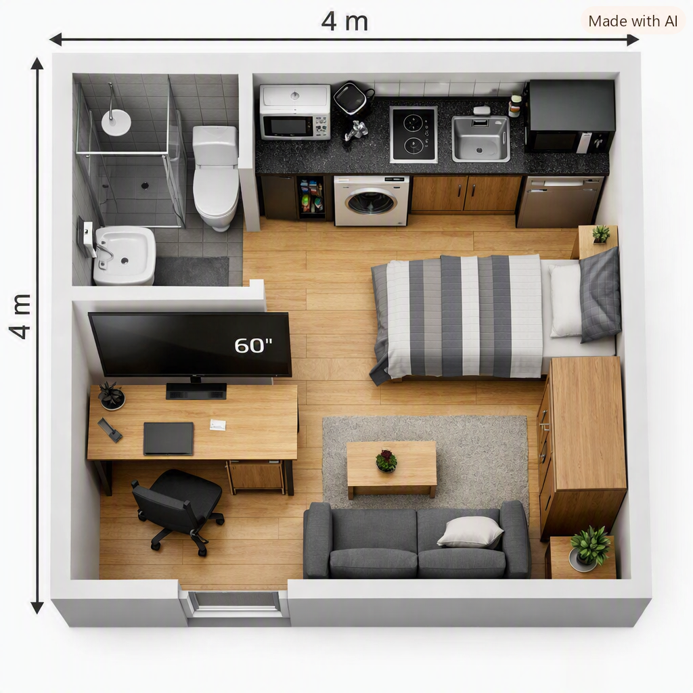
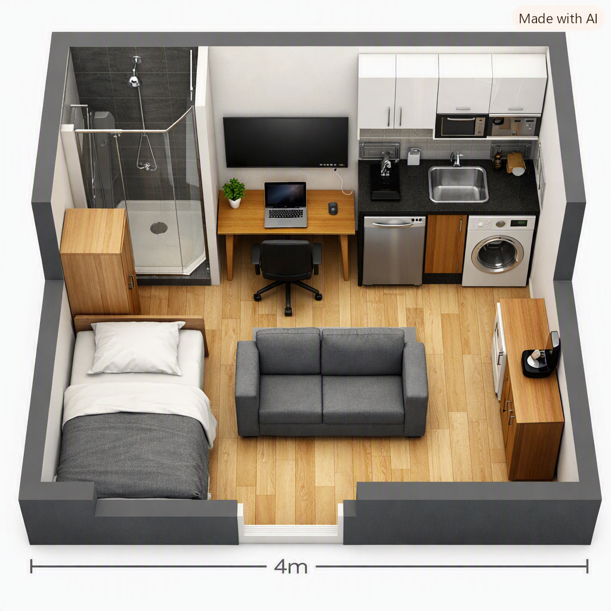
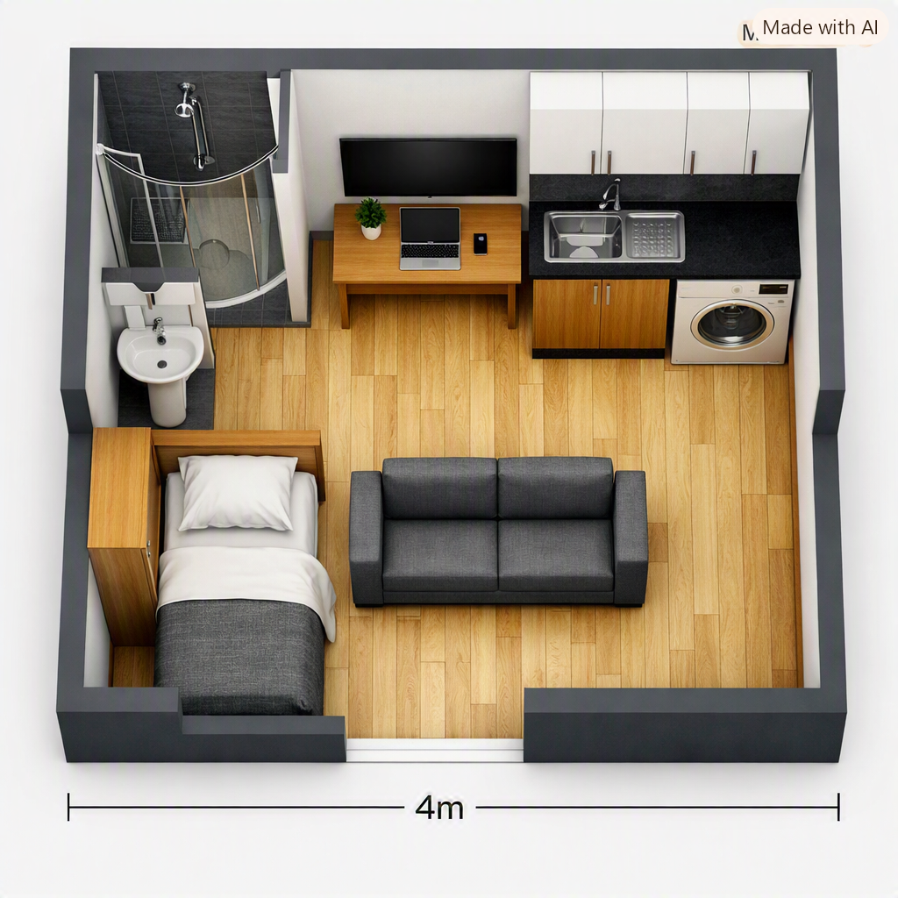

EL PLAN
Modelos e ideas para la casa:




Podemos tener el sillón justo en frente del escritorio, y la televisión en la pared. De ese modo, podemos tener todo en un solo lugar. ¡Más espacio que ahorro!
Esta es una lista de aquello que necesitamos y que podríamos querer:
- ¡Vivienda! (y patio cerrado)
- ¡Baño!
- ¡Cocina!
- ¡Habitación!
- ¡Sala de estar!
- ¡Más!
¡Otras ideas!
- Construir una segunda casa junto a la casa, y alquilarla
- Construir un segundo piso sobre la casa, y alquilarlo
- Abrir una cuenta de banco en las Islas Caimán o en otro lugar libre de impuestos
- Estudiar en Full Stack Open
- Una PS5 Pro como reproductor de DVD y Blu-ray (y para jugar también, quizás pudiendo ahorrarme la PS6)
- Microondas y ollas y sartenes eléctricas (¡y quizás pueda ahorrarme de hornos y hornallas!)
¿Qué decisiones tengo que tomar?
Todo lo referente al desarrollo de videojuegos propios:
En primer lugar, existe Unreal Engine.
También puedo usar Fluorite Engine, el motor propietario de Toyota.
Godot también es una opción.
Defold puede ser interesante.
PICO-8 es una gran opción en caso de desarrollar juegos pequeñitos.
LÖVE puede ser genial en caso de querer evitar usar un motor.
Todos estos motores y herramientas funcionan en Windows, Mac y Linux.